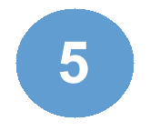

The Hero's Journey, also known as the Monomyth, is the most classic of story architypes, and has it's roots in Ancient
Greek myth. As such, stories that use this model often involve a character from a simple and familiar background undergoing
training and overcoming a great obstacle to become greater than they were before. There are many versions of this cycle, the
hero's journey is specifically accredited to Joseph Campbell for his book "The Hero with 1000 Faces", but has also been
adapted for use by Christopher Vogler, who wrote a more basic guide to using the hero's journey that would be used during
his work with Disney and after. (This model is based on Christopher Voglers, as it is much more concise)
The Ordinary World
The Starting point of the narrative, the hero is in their ordinary world and is shown interacting
with the people around him. We get a sense of their character and what they stand for, and a general
understanding of the status quo.
Call to Adventure
The peace of this status quo is interrupted and the hero recieves is given their quest, a task or problem to
resolve. This can be anything from a great otherworldly threat to a smaller more personal issue, and will
regardless serve as the main drive of the story.
Refusal of the Call
The Hero hesitates to take up the quest for some reason, either due to some personal shortcoming or
doubts as to the achievablity of this quest. They will refuse the call as a result, which will normally have
some kind of concequence, perhaps giving more motivation to undertake the journey.
Meeting the Mentor
A wise figure is introduced and meets the hero, offering them advice, training, spiritual guidence, an
item of value, something critical to making the hero undertake the journey. They overcome their hesitation
and begins preparing to take on this quest.
Crossing the Threshold

The Hero is now ready to undertake the quest set out before them, either accepting it and going willingly
or running out of time and being forced to undertake it. They leave the familiar world and step
into an unknown one for the first time.
Tests, Allies, Enemies
Now that the quest is truely underway a new set of challenges present themselves as the hero progresses.
These will involve discerning between friend and foe, of which both may be in ample supply, and growing their
skills with more direct challenges, overall preparing them for the greater obstacles ahead.
Approach to the Inmost Cave
The build-up to the first true challenge of the quest, and a cause for any doubts or fears to resurface in the face of
the new and perhaps unfamiliar. This buildup is about them preparing to face such a challenge and coming
to terms with any issues they might have with the quest or their abilities.
Ordeal
The challenge is now made real and the stakes are high, the hero must overcome this obstacle to ensure their quest
continues and quite possibly that they survive at all. This will most likely be their most difficult challenge
to pass and will be the most important component of the story.
Reward
They use all their strengths and wits and ultimately succeed in passing the monumental challenge laid before them,
becoming a stronger person for doing so. The hero also usually obtains something, such as an item of importance
to their quest or some kind of emotional payoff.
The Road Back
Now that the quest is all but complete the journey home must be undertaken, either completing their goal if such
hasn't already been completed or simply seeing through the literal journey home. However, there is still one final
challenge on the horizon they must face before completing their journey.
Resurrection
The final challenge has presented itself and is now underway, with the highest stakes of the journey so far, normally
stretching past the original goal of the quest in the first place, perhaps affecting the entire world. The hero
vanquishes this challenge and is reborn as a result of this experience, becoming a better person.
Return with the Elixir
The final leg of the journey concluded, the hero returning home changed from their experiences for the better.
Their quest will have been resolved and they will have been rewarded somehow for undertaking the journey, and
the status quo will ulimately have changed for the better.
Famous Examples Include:
Star Wars: A New Hope, The Lion King, The Odyssey by Homer

 The Starting point of the narrative, the hero is in their ordinary world and is shown interacting
with the people around him. We get a sense of their character and what they stand for, and a general
understanding of the status quo.
The Starting point of the narrative, the hero is in their ordinary world and is shown interacting
with the people around him. We get a sense of their character and what they stand for, and a general
understanding of the status quo.